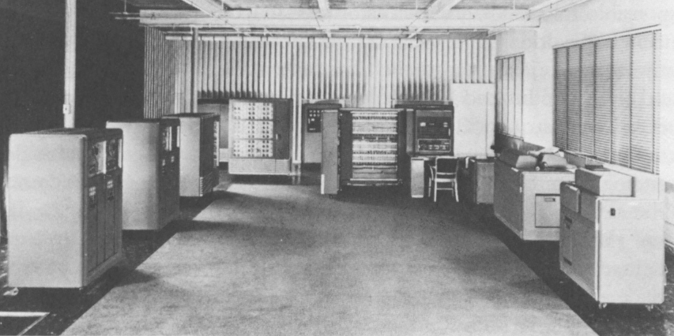

The Seed of the Shell: From Human Computers to Communal Computing
This started out as one thing, and become something very different, but has not yet had any finish working or organization to reconcile its ultimate form with it’s origins.
It began as notes on an inquiry into “the shell”, and become a mediation on the history and destiny of shared computation.
Outline
The Artificial Intelligence
NATURE (The Art whereby God hath made and governes the World) is by the Art of man, as in many other things, so in this also imitated, that it can make an Artificial Animal. For seeing life is but a motion of Limbs, the beginning whereof is in some principall part within; why may not we say, that all Automata (Engines that move themselves by springs and wheels as doth a watch) have an artificial life? For what is the Heart, but a Spring; and the Nerves, but so many Strings; and the Joynts, but so many Wheels, giving motion to the whole Body, such as was intended by the Artificer? Art goes yet further, imitating that Rationall and most excellent worke of Nature, Man. For by Art is created that great LEVIATHAN called a COMMON-WEALTH, or STATE, (in latine CIVITAS) which is but an Artificiall Man…
According to Hobbes, The original artificial intelligence is the political state.
Cameralism: Recording Information to Manage State
The techniques which make the mechanical computer possible were already in play in the 18th century, tracking the state of societies to make them manageable.
Government, Leibniz was convinced, was not conceivable without information. Information, in turn, consisted of the facts and figures concerning the ’here and now’ of the state: the size of population, the quality and number of goods and properties, mortality and birth rates, the volume of exports and imports had, inter alia, to be known. And they had to be made visible at a glance in order to enable the regent and his administration to act quickly and decisively. This became possible, as Leibniz’ meant, by specific means of display: the so-called ’Staats-Tafeln’ as a ’written short constitution summarizing the heart of all information concerning the government.’ Therefore, Leibniz stressed the intrinsic connexion betwen state and knowledge.
…
The eighteenth-century Cameralists followed Leibniz by emphasizing the mediality of politico-economical knowledge. Three medial forms were especially important and highly regarded. The first was the list or the table, which seemed - from the Cameralist point of view - to be of outstanding value in the most parts of government. So Justi proposed, to cite just one example, to record the state of industry by creating tables illustrating any change in the number or composition of work and workers which took place in a given period.
In this regard, tables represented media of access and manipulation. Or more generally, tables were in line with the Cameralist intention to visualize hidden relations and forces and to make reality compatible with a program of reform and transformation.
This also applied to a second medial form: double-entry bookkeeping. Of course, double-entry bookkeeping was closely connected with tables. Using tables, which should be derived from customhouse papers and related files, made it possible for example, to record incoming and outgoing goods.
(Marcus Sandl, “Development as Possibility” in cite:ssner16_econom)
Computing Humans: Turing’s Machines
Turing’s On Computable Numbers minimizes and analyzes the process of manual computation, as it was performed by human computers. His analysis was sufficiently precise and detailed, that it could be translated into an “Automata”, thus giving us the automatic computer.
Computers as Humans: The ENEAC
Humans Operating Computers: The IBM 701
Systemization of Computer Operation: ??
Sharing Time with the Automatic Operating System: MULTICS
Communal Computing: UNIX
Subsequent and Future Unfoldings:
- Personal Computing
- Networked Computing
- “Cloud” computing
- Containerization/DevOps/Monorepos etc
- Engineering the engineering organization into a box
The closing lines of Kant’s “What is Enlightenment?”
Wenn denn die Natur unter dieser harten Hülle den Keim, für den sie am zärtlichsten sorgt, nämlich den Hang und Beruf zum freien Denken, ausgewikkelt hat; so wirkt dieser allmählig zurük auf die Sinnesart des Volks, (wodurch dieses der Freiheit zu handeln nach und nach fähiger wird), und endlich auch so- gar auf die Grundsätze der Regierung, die es ihr selbst zuträglich findet, den Menschen, der nun mehr als Maschine ist, seiner Würde gemäß zu behandeln.
https://bdfwia.github.io/bdfwia.html
Nature, then, has carefully cultivated the seed within the hard core–namely the urge for and the vocation of free thought. And this free thought gradually reacts back on the modes of thought of the people, and men become more and more capable of acting in freedom. At last free thought acts even on the fundamentals of government and the state finds it agreeable to treat man, who is now more than a machine, in accord with his dignity.
Themes
Internalization
Most of the things we currently think of as parts of a computer used to be considered as ancillary devices. These have all been miniaturized, accelerated, automated, and internalized.
The Mechanical Turk
Our automated systems of operation begin as humans working to mimic the machine. (See Turing’s making this explicit – and thereby giving the general form of the mechanization of human activity – and see the development of the operating system described bellow).
Thus, the enduring force of the allegory of the mechanical turk.
The evolution and transformation of human being
Questions
What is a shell?
If you are familiar with the computery sense of shell, there’s a good chance you think a shell is something particular to a command-line terminal environment. In that case, you can join me and others I’ve talked to in being delightfully surprised to learn that shell, even in the narrow computery sense, is a much more general thing: “a user interface for access to an operating system’s services”1.
The vast majority of computer users toil their entire computing day away inside an infamous shell that is generally unrecognized as such: the Windows shell. The terminal-bound CLIs often taken to be synonymous with shell simpliciter are only a special case of a much more general concept in the architecture of human-computer interface.
This concept has an interesting history and, as I will try to show, fascinating and important implications for how we think about the use of and interface with computers.
Why go deeper into the shell?
The aim of this remark is to solidify and share my personal meditation on the history, nature, and implications of the shell concept. Though I am primarily concerned with computer shells, a deeper understanding of their characteristics and potential can be nurtured by some early attention to more general senses of the term shell.
The most concrete sense of the word is the one with physical significance. The most technical physical sense, used by engineers to describe a structural pattern, is remarkably abstract:
A shell is a type of structural element which is characterized by its geometry, being a three-dimensional solid whose thickness is very small when compared with other dimensions — wikipedia.org
Here, shell is taken to describe a vast class of three-dimensional solids. Why does it matter?…
To recall the more mundane and more concrete senses, we can appeal to the term’s etymology.
According to etymonline.org, the earliest etymon of shell is the speculated Proto-Indo-European root *skel-, “to cut”. This root claims common ground for a number of Germanic words with a similar sound, including the Old English scealu, “shell, husk”, and others meaning “piece cut off, rind, egg shell”, “peel”, and “tile”, tied to words like *skaljo, skyl, and schelle. The unifying concept suggested by etymonline is that of a “covering that splits off”. A couple common notions take shape through these ancient determinations: A shell protects, hides or covers, or did so once. A shell is removable.
Common senses of the term settle down to mark a topic congruent with our target sense as the English usage goes on:
Sense of "mere exterior" is from 1650s; that of "hollow framework" is from 1791. Meaning "structure for a band or orchestra" is attested from 1938.
What’s the difference between a shell and a cli in general?
A shell, in the computing sense, is not synonymous with a command line interface (CLI). Most CLIs are not shells (though most CLI are probably launched by a shell) and the most widely used shell is not a CLI.
A shell is a program that provides an interface for a user to interact with an operating system. True to the etymological coincidence of ’shell’ and ’husk’ in the Old English scaelu, the shell is so called because it was the husk enclosing the operating system’s kernel.
This is a potent metaphor. Let’s press the underlying analogy until it breaks, so we can see what it’s made of.
A husk is a shell that protects a seed. We sometimes think and talk as if the seed itself were the germ whence plants grow, but that’s incorrect: plants grow from their embryo, the germ. A seed’s destiny is to transport and preserve its germ until it can find fertile ground. Having found a place where it can settle, the seed nourishes the germ. As the germ develops into a seedling, the latter should break free of the shell. Thence, the germ quickly outgrows and consumes its kernel. If all goes well, the newly sprouted seedling will realize a self-sufficient form of growth, and begin feeding on intake from the world at large.
A seed’s husk provides protective enclosure while the seed itself nurtures and enables the development of the germ: given the proper conditions, this trinity will sprout, take root, and grow into something miraculously different. If a shell encloses an operating system’s kernel, providing an interface to the user, where, if at all, do we find the analog of the germ, the computer’s embryo? What, if anything, does this become in the optimal conditions?
The seed of the kernel concept lies in the origin of the operating system
In a nutshell, a kernel is a seed program at the core of an operating system. The kernel maintains complete control over everything in the system, and orchestrates access to the underlying hardware, on which the computations are actually orchestrated.
To develop an understanding of the kernel concept adequate to nurturing a robust understanding of the shell concept, we’ll have to cultivate an understanding of the kernel concept that is more expansive. It is one thing to say “the kernel is the core of an operating system”. It is another thing to know what an operating system is, why operating systems have cores, what kind of operations an operating system performs, and what kind of system it operates.
We are digging for insights into the essence of the concepts rather than technical details about how the things that now bear those names happen to be constituted. Suppose I were capable of explaining the intricate technical details of the Linux kernel, the exact mechanisms by which it relates to, and is accessible from, a popular shell like Bash or Zsh, and how these things stand in relation to a given Linux distribution. (I am not but let’s suppose I were.) This explanation would not tell us much about the nature of an operating system in the abstract. It would tell us nothing about the kernel concept as such and provide very little insight into the essential nature and promise of the shell. To get at these things, we want a genealogical inquiry.
The origin of the shell concept lies in that of time sharing systems. Time sharing systems were a pivotal innovation on the operating system: in essence, modern kernels are just the persistent form of the original operating systems. The origin of these foundational systems lies in the complex social and mechanical constellations of the old computing machine rooms.
In order to get a visceral sense of why these machine rooms gave birth to operating and time sharing systems, we need a concrete understanding of what it was like to work with those beasts.
A system for efficiently operating a computing machine that fills a room

http://www.columbia.edu/cu/computinghistory/701.html
In the 1950s, computing machines where gigantic, expensive, and rare. Robert
- Patrick worked on developing some of the earliest operating systems and
the operational practices that preceded systematic automation. In 1987, Patrick was asked to prepare a paper2 reflecting on his work developing systems for operating these kinds of devices.
The roots of this work go back to 1954, wrote Patrick. At that time, he was working on an IBM 701. The 701 was IBM’s first commercial scientific computer. It rented for over $23,000 a month and filled a 40 foot by 40 foot room. It was a “single sequencing machine”, meaning it could only execute one stage of a computation task at a time: e.g., if it was reading input, it was only reading input, not processing anything, until the entire input was consumed. Like other machines of this era, it was composed of an interrelated system of heterogeneous storage and processing devices that needed lots of attention and manual care: a typical configuration consisted of
- a punch card reader
- a punch card puncher (for machine-readable output)
- a 150-line-per-minute printer (for human-readable output)
- an internal memory of 2,000 36-bit words
- four magnetic tapes
- a magnetic drum
Operating these bohemoths was intricate, complex, and fraught:
The typical mode of operating was programmer present and at the operating console. When a programmer got ready for a test shot, he or she signed up on a first-in, first-out list, much like the list at a crowded restaurant. The programmer then checked progress frequently to estimate when he would reach the top. When his time got close, he stod by with card deck in hand. When the previous person finished or ran out of alloted time or abruptly crashed, the next programmer rushed in, checked that the proper board was installed in the card reader, checked that the proper board was installed in the printer, checked that the proper board was installed on the punch, hung a magnetic tape …, punched in on a mechanical time clock, addressed the console, set some switches, loaded his punched card deck in the card reader, prayed the first card would not jam, and pressed the load button to invoke the bootstrap sequence.
If all went well, you could load a typical deck of about 300 cards and begin the execution of your first instruction about 5 minutes after entering the machine room. If only one person did all this set up and got going in five minutes, he bustled around the machine room like a whirling dervish.
According to Patrick’s account, the preparation and setup rarely went perfectly. Butter-fingered programmers were prone to squander the entirety of their test time fumbling the setup and correcting for mishaps. This was costly: in addition to squandering the programmer’s time, the tedious and error prone load times wasted compute time. Operating the computer was a manual processes and if operators worked twelve hours a day, seven days per week, with a rental price of $23,000 per month, compute time would still be priced at about $67 per hour. (That’s in 1954 dollars. In 2017, it would be about $620 per hour.)
This was the muck in which the operating system took root. The earliest steps made towards systematization recounted by Patrick were simple measures to improve the reliability and efficiency of operation: e.g., organizing programmer-operators to work in teams so there was always an assistant or standardizing plug boards to reduce the need for switching. Some important technical improvements also contributed. Most worthy of note, perhaps, was the advent of “interpretive programming packages”, such as Speedcoding. These “high-level” languages abstracted away from hardware instructions, providing a human-readable language for specifying a machine’s programs.
The specification of an operating system was for the IBM 704, developed as a collaborative effort between GM and North Western ?? and the SHARE group ???. I recommend skimming Patrick’s highlights, to get a sense for what exactly an operating system consisted in.
The sound of one of these computing rooms
From the first business computer LEO: http://www.leo-computers.org.uk/images/leo-oz.mp3
Why do all the different shells run in the same terminal emulator?
Why are there no really great “next generation” shell+terminal systems?
Introduction
Motivation
I was recently made aware that I had a very shallow understanding of the standard Linux command line interface (CLI) shell. As I began studying to overcome this superficiality, I discovered that the term shell invokes deep historical and conceptual roots and that its contemporary relevance extends well beyond the standard CLI’s in use by IT professionals.
If you haven’t had occasion to do a deep dive into the concept of a shell, you might harbor the same kind of misconceptions I did. You might think that a shell is a CLI in general, or that a shell has something to do with Unix-like environments in particular (which has a kernel of truth, but only for historical reasons). You might know that that there are different *nix shells — such as sh, bash, and zsh —
Origins
The origins of Unix/Linux shells lie in CTSS
Denise Richie
The UNIX Time-sharing System A Retrospective*
> In most ways UNIX is a very conservative system. Only a handful of its ideas are genuinely new. In fact, a good case can be made that it is in essence a modern implementation of MIT’s CTSS system [1]. This claim is intended as a compliment to both UNIX and CTSS. Today, more than fifteen years after CTSS was born, few of the interactive systems we know of are superior to it in ease of use; many are inferior in basic design.
Time Sharing Systems
Time-sharing was a misnomer. While it did allow the sharing of a central computer, its success derives from the ability to share other resources: data, programs, concepts. It cracked a critical path bottleneck for writing and debugging programs. In theory this could have been achieved as well with a direct access approach. In practice it could not.
Direct access hems users in a static framework. Evolution is unfrequent and controlled by central and distant agents. Creativity is out of the user’s hand.
Time sharing, as it became popular, is a living organism in which any user, with various degrees of expertise, can create new objects, test them, and make them available to others, without administrative control and hassle. With the internet experience, this no longer need be substantiated.
CTSS was developed during 1963 and 64. I was at MIT on the computer center staff at that time. After having written dozens of commands for CTSS, I reached the stage where I felt that commands should be usable as building blocks for writing more commands, just like subroutine libraries. Hence, I wrote “RUNCOM”, a sort of shell driving the execution of command scripts, with argument substitution. The tool became instantly most popular, as it became possible to go home in the evening while leaving behind long runcoms executing overnight.
Commands and Scripts
The shell, at it’s root, is an interface for issuing commands and observing the effects of their execution.
If we have a sequence of commands we issue often, to many different actors, we might get sick of repeating ourselves so much. Then we may want to write a single script which records the sequence of commands, and then simply instruct each actor to follow the same script.
Segue to composing scripts via the script command that simply records
scripts.
RUNCOM
:URL: https://en.m.wikipedia.org/wiki/Run_commands
From Brian Kernighan and Dennis Ritchie: "There was a facility that would
execute a bunch of commands stored in a file; it was called runcom for 'run
commands', and the file began to be called 'a runcom'. rc in Unix is a
fossil from that usage."[1]
Tom Van Vleck, a Multics engineer, has also reminisced about the
extension rc: "The idea of having the command processing shell be an
ordinary slave program came from the Multics design, and a predecessor
program on CTSS by Louis Pouzin called RUNCOM, the source of the '.rc'
suffix on some Unix configuration files."[2]
TODO Terminology
Integrate…
shell (n.):
Old English sciell, scill, Anglian scell “seashell, eggshell,” related to Old English scealu “shell, husk,” from Proto-Germanic *skaljo “piece cut off; shell; scale” (source also of West Frisian skyl “peel, rind,” Middle Low German schelle “pod, rind, egg shell,” Gothic skalja “tile”), with the shared notion of “covering that splits off,” from PIE root *(s)kel- (1) “to cut, cleave” (source also of Old Church Slavonic skolika “shell,” Russian skala “bark, rind;” see scale (n.1)). Italian scaglia “chip” is from Germanic.
Sense of “mere exterior” is from 1650s; that of “hollow framework” is from 1791. Meaning “structure for a band or orchestra” is attested from 1938. Military use (1640s) was first of hand grenades, in reference to the metal case in which the gunpowder and shot were mixed; the notion is of a “hollow object” filled with explosives. Hence shell shock, first recorded 1915. Shell game “a swindle” is from 1890, from a version of three-card monte played with a pea and walnut shells.
TODO Notes
McCarthy:
http://www-formal.stanford.edu/jmc/history/timesharing/timesharing.html
> By time-sharing, I meant an operating system that permits each user of a computer to behave as though he were in sole control of a computer, not necessarily identical with the machine on which the operating system is running.
> giving each user continuous access to the machine
> The major technical error of my 1959 ideas was an underestimation of the computer capacity required for time-sharing. I still don’t understand where all the computer time goes in time-sharing installations, and neither does anyone else.
Ken Thompson
On Multics
https://en.wikipedia.org/wiki/Multics#Novel_ideas
> “the things that I liked enough (about Multics) to actually take were the hierarchical file system and the shell—a separate process that you can replace with some other process.”
Talk “Early days of Unix and design of sh by Stephen R. Bourne”
sh as a language:
Typeless
Strings are “first class and only citizen”
Because it’s meant to be both interactive and scripting. This is why strings are front and center and sole: built around typing commands in at the terminal.
“It’s just doing string processing most of the time.”
Command substitution
Commands vs. functions
Functions weren’t added initially. Bourne views this as an oversight.
An “Expression Language”
Dimensions of the Shell UI:
- input :: a string of characters on a single line
- view port :: an arbitrary number of lines of strings
- interface :: 1 & 2 plus time: starting and stopping process, back-grounding processes, etc.
Exercises/Examples
combine two files, sorting their lines, into a third
cat file1 file2 | sort > file3
Principles
Both filters and pipes demonstrate a basic UNIX principle: Expect the output of every program to become the input of another, yet unknown, program to combine simple tools to perform complex tasks.
Handy Command
- Search for a command that starts with
sin the command history !s- (no term)
- Find out what commands could be used:
compgen
Social Media
Hobbes identified the essence and destiny of artificial intelligence in his 15th century political treatise.
- A program (in its widest sense) communicates instructions.
- Computation in the sense investigated by theoretical computer science is about the communication of calculation (and of of the calculable).
- The computer is makes communication calculable (simply by virtue of being a machine that can be programmed to calculate.)
- Social media is not an accidental manifestation, since the programmable
computer is in its essence a medium of communication.
- But what kind of sociality?
- What kind of medium?
- The programmability is the mode of communication.
The self-programming of society is the essence and actualization of “artificial intelligence”.
Further Resources
- Unix intro on the shell
- http://cis.rit.edu/class/simg211/unixintro/Shell.html
- AT&T archive of Bell Labs documentary on the UNIX operating system
- https://www.youtube.com/watch?v=XvDZLjaCJuw
- Compiling and running a fortran program on an IBM 1401
- https://www.youtube.com/watch?v=uFQ3sajIdaM (The technology here may seem relatively primitive, and this is quite fascinating in its own right. However, that hides the really interesting point for our purposes: The point is not that this tech is old, the point is that these old ways show the core functionality of the computer in stark, material detail, but every aspect of these manual processes is still essential to the computer on which you’re reading this. We have improved the way these processes are executed, making them much smaller, quicker, and fully automated, but the same procedures are still at work).
- Demo and explanation of the history and anatomy of the 1401
- https://www.youtube.com/watch?v=VQueCt114Gk
- Computer Pioneers: Pioneer Computers Part 1
- https://www.youtube.com/watch?v=qundvme1Tik
Illustrations

Blog post sketches
Growing into my Shell
Neat shells:
- experimental graphical shell
- https://www.doc.ic.ac.uk/~tora/Kevlar/index.cgi
- a strongly, statically types shell
- http://www.samnip.ps/tush/
Commands and Scripts
The shell, at it’s root, is an interface for issuing commands and observing the effects of their execution.
If we have a sequence of commands we issue often, to many different actors, we might get sick of repeating ourselves so much. Then we may want to write a single script which records the sequence of commands, and then simply instruct each actor to follow the same script.
Segue to composing scripts via the script command that simply records scripts.
RUNCOM
:URL: https://en.m.wikipedia.org/wiki/Run_commands
> From Brian Kernighan and Dennis Ritchie: “There was a facility that would execute a bunch of commands stored in a file; it was called runcom for ‘run commands’, and the file began to be called ‘a runcom’. rc in Unix is a fossil from that usage.”[1]
> Tom Van Vleck, a Multics engineer, has also reminisced about the extension rc: “The idea of having the command processing shell be an ordinary slave program came from the Multics design, and a predecessor program on CTSS by Louis Pouzin called RUNCOM, the source of the ‘.rc’ suffix on some Unix configuration files.”[2]
Denise Richie
The UNIX Time-sharing System: A Retrospective*
> In most ways UNIX is a very conservative system. Only a handful of its ideas are genuinely new. In fact, a good case can be made that it is in essence a modern implementation of MIT’s CTSS system [1]. This claim is intended as a compliment to both UNIX and CTSS. Today, more than fifteen years after CTSS was born, few of the interactive systems we know of are superior to it in ease of use; many are inferior in basic design.
—